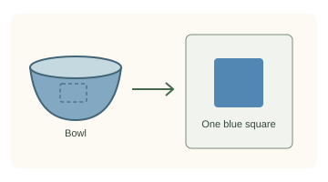
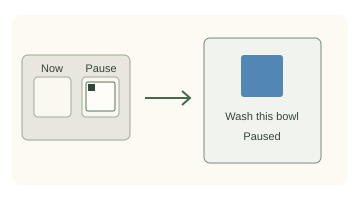
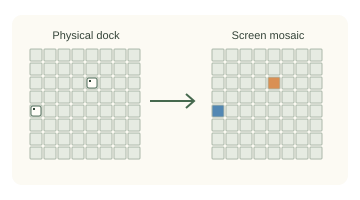
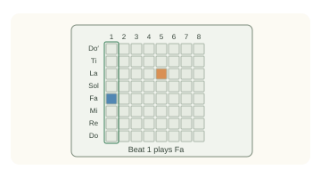

What I am revisiting
In my Week 8 Self Portrait, I turned a live webcam image into a grid of colored squares and used clicks to pick a color from the image. I want to make a new work in response to that sketch. This time, a color picked from a real object becomes a single square in a larger mosaic. I am also drawing on Week 7's mapping between physical positions and digital visuals and Week 10's use of visual parts to trigger sounds.
What I want to make
Focus Mosaic is a desktop tool people with ADHD who may want a clearer way to start a task or return to it after an interruption. If I need to wash a bowl, I show the bowl to a webcam and choose a small area on its surface. The program samples one representative color from that area and assigns it to a blank 3D-printed tile along with the action “wash this bowl.” The bowl becomes one solid blue square. When I slide the tile into Now, the screen shows that square and the current action. If I pause, moving the tile to Pause keeps both visible so I can return to the same step.
When I finish, I place the tile in a rectangular dock with eight rows and eight columns. Each physical slot matches one cell in the 8×8 screen mosaic. A tile fills exactly one screen cell with its solid color. Moving the tile moves the colored square and changes its musical position.
The eight rows play Do, Re, Mi, Fa, Sol, La, Ti, and high Do from bottom to top. The eight columns are beats, played from left to right. I can put the blue bowl tile in the first beat on the Fa row, or move it to the third beat on the Sol row. I can rearrange the same tiles to make a different melody. In the first version, each beat plays one note and an empty column is a rest. The board stays quiet during a task. Pressing Play starts the melody and lights up the squares as they sound.
Interaction sketches



